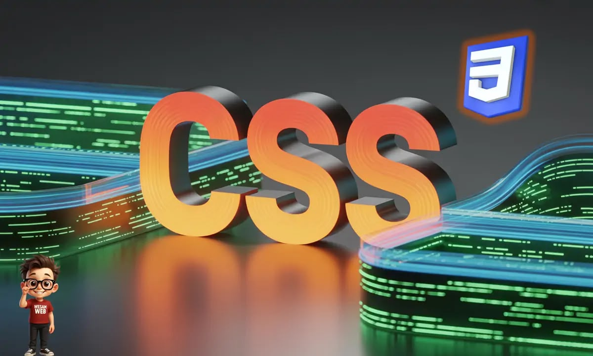

شروق عاطف شعبان السيدعلي
2501590
حيث تعد شبكة الإنترنت اليوم العالميه واحده من أهم ركائز العصر الرقمي، ولم تكن لتظهر بهذا المظهر الجذاب والمنظم لولا وجود لغات الويب الاساسيه، حيث كان في البدايه صفحات الويب عباره عن هيكل فقط من غير وجود أي تنسيقات او الوان بشكل يجذب المستخدم لتصفح الموقع.ومع مرور الوقت ظهرت لغة ال Cssالخاصه بالتنسيق والألوان والشكل الجمالي للويب ومن هنا ظهرت لغة ال cssوهي اختصار لل Cascading style sheets او ما يعرف باللغه العربيه ب اوراق الانماط المتتاليه حيث تعتبر ال cssهي العمود الفقري للتصميم المرئي على الإنترنت حيث انها اللغه المسؤله عن تحويل الهياكل النصيه المصممه بلغة ال Html الى واجهات مستخدم مذهله ومريحه للعين وموافقه مع جميع انواع الشاشات حيث يهدف هذا البحث إلى استكشاف
1-ماهي لغة ال css
2-تاريخ لغة ال Cssولمسات الجمال
3-اصدارات لغة الCss
4-واهميتها في تطوير البحث الحديث
5-كيفية عملها

اولا كلمة ال cssهي اختصار لجملة Cascading style sheets وهي لغة تستخدم في تصميم صفحات الويب فمن خلالها يمكنك تغيير الوان العناصر وتحديد مواقعها واحجامها وإضافة مؤثرات لها وجعل صفحات الويب متجاوبه مع مختلف احجام الشاشات لكي تظهر بشكل ملائم للمستخدم سواء كان بيفتح الصفحه بواسطة هاتف ،تابلت، أو حاسوب وبشكل عام الcss هي لغةتصميمstyling languageوليست لغةبرمجه programming language html او صفحات الويب التي يتم بناؤها بواسطة ال Xmlفهي تستخدم في تصميم صفحات الويب التي يتم بناؤها بواسطة ال
حيث ظهرت لغة ال Css أوراق الأنماط المتتاليه"حيث لأول مره في اوائل التسعينات كحل لتعقيد تصميم مواقع الويب المتزايد حيث كان الانترنت في بداياته، وكان قدرة المصممين على التحكم في مظهر صفحات الويب محدوده، وكان محتوى الويب في معظمه نصيا، وكانت لغة الhtml لغة ترميز النص التشعبي الأداة الرئيسيه لهيكلة مستندات الويب
التسلسل الزمني
حيث في عام 1994-1996اقترح هاكون ويوم لي وبيرت بوس اول مواصفات ال Css1 لفصل المحتوى عن العرض
وفي عام 1998تم تقديم css2مما ادى الى توسيع إمكانيات التنسيق والتصميم
وفي عام 2002 تم اصدار css2.1 مع التركيز على توافق المتصفح وتحسين css2
وفي عام w011 بدأ طرح css3 كمجموعه من المواصفات المعياريه، مما يتيح تصميما متقدما وتفاعليه
وفي عام 2020يجرى تطوير css4وهو على وشك جلب عقد المزيد من الميزات المتقدمه إلى عالم تصميم الويب
لغة ال css يتم تطويرها باستمرار بدءا من ظهورها اول مره عام ١٩٩٦وحتى يومنا هذا.المجموعة المسؤوله عن تطوير هذه اللغه تدعى world wide Web cosortium وفي العاده تختصر بكلمة W3c
حيث يوجد ثلاث إصدارات رسميه حتى اللحظه من لغة ال Css والفكره من هذه الإصدارات ليس تغيير طريقة التعامل مع اللغه بل إضافة ميزات جديده عليها
الاصدارالاولCss1
الاصدار الاول Css1 فكرته الاساسيه كانت فصل كود التصميم عن كود الصفحه الذي يتم بناؤها بواسطة ال Html الامر الذي يجعلك قادر على استخدام ملف التصميم نفسه المكتوب بلغة ال Css في اي صفحه تريد
الاصدارالثاني Css2
الاصدار Css2 أضيف فيه خصائص جديده حيث بات بالإمكان التحكم بأمكان العناصر وتحميل خطوط غير الخطوط الموجوده في جهاز المستخدم وإضافة تأثيرات جديده على النصوص كالظلال بالاضافه إلى تحديد كيف ستظهر الصفحه في حال أراد المستخدم طباعتها في ورق
الاصدارالثالث Css3
الاصدار css3 أضيف فيه خصائص تسمي Media Queries والتي من خلالها يمكنك جعل حجم الصفحه متجاوب مع مختلف احجام الشاشه وأصبح الوصول لعناصر الصفحات اكثر مرونه والتحكم بأمكان العناصر اصبح اكبر وطرق إضافة التلوين أصبحت عديده حيث أصبح بالإمكان دمج الألوان وأصبح بالإمكان وضع اكثر من صوره كخلفيه وأصبح بالإمكان عرض مؤثرات رائعه للعناصر كجعلها تتحرك من مكانها وتدور وتتمدد وتغير الوانها
حيث تكمن أهمية لغة ال Css في تطوير الويب الحديث في كونها العمود الفقري لتصميم واجهات المستخدم وتحسين تجربة التصفح
اهم النقاط والاهميه في تطوير الويب الحديث
1-فصل المحتوى عن التصميم
سهولة الصيانه حيث يمكنك تعديل مظهر مئات الصفحات في موقع واحد من خلال تغيير ملف Css واحد فقط وتقليل التكرار بمنع كتابة اكواد تنسيق مكرره داخل Html مما يجعل الكود انظف وأسهل في القراءة والتطوير
2-التصميم المتجاوب Responsive Design
١-دعم جميع الاجهزه عبر استخدام استعلامات الوسائط وأنظمة التخطيط الحديثه مثل Grid,flex box وتتيح ال css للمواقع الظهور بشكل مثالي ومثبت على الهواتف الذكيه والاجهزه اللوحيه والشاشات الكبيره
3-تحسين تجربة المستخدم Ux والاداء
الحركات والتأثيرات التفاعلية حيث تتيح css انشاء انتقالات سلسله transition وحركات Animation دون الحاجه لاعتماد مفرط على لغات برمجه ثقيله مثل جافا اسكريبت سرعة التحميل تخزين ملفات cssمؤقتا في متصفح المستخدم يسرع تحميل الصفحات المتتاليه.أدوات الاداء الحديثه خصائص متقدمه مثل الcontent-visibility تساعد على تحسين أداء ومتعلقه العرض للصفحات الضخمة
4-دعم إمكانية الوصول Accessibility حيث تتيح Cssتهيئة المحتوى ليتوافق مع طرق العرض البديله مثل القراءة الصوتيه عبر قارات الشاشه او الاجهزه المخصصه لذوي الاحتياجات الخاصه كطريقة برايل دون التأثير على كود Html الاساسي
| وجه المقارنه | inline css | internal css | External css |
|---|---|---|---|
| مكان الكتابه | داخل وسم Html | داخل وسم style | في ملف منفصل |
| الاستخدام | عنصر واحد | صفحه واحده | عدة صفحات |
| التعديل | اقل سهوله | متوسط | اسهل في الاداره |